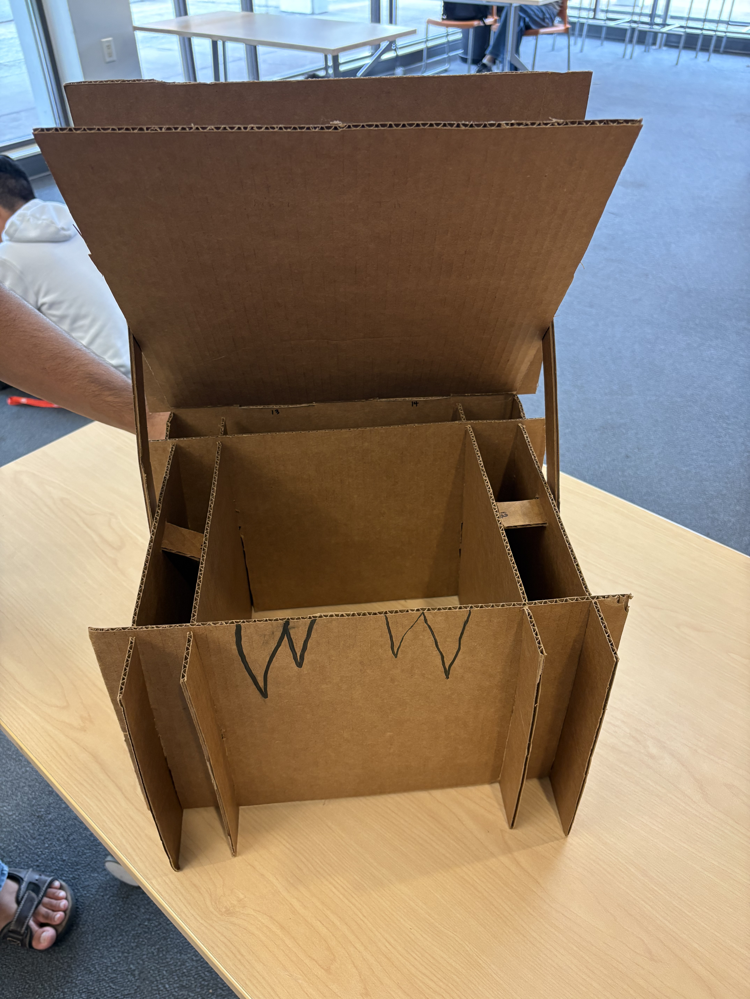
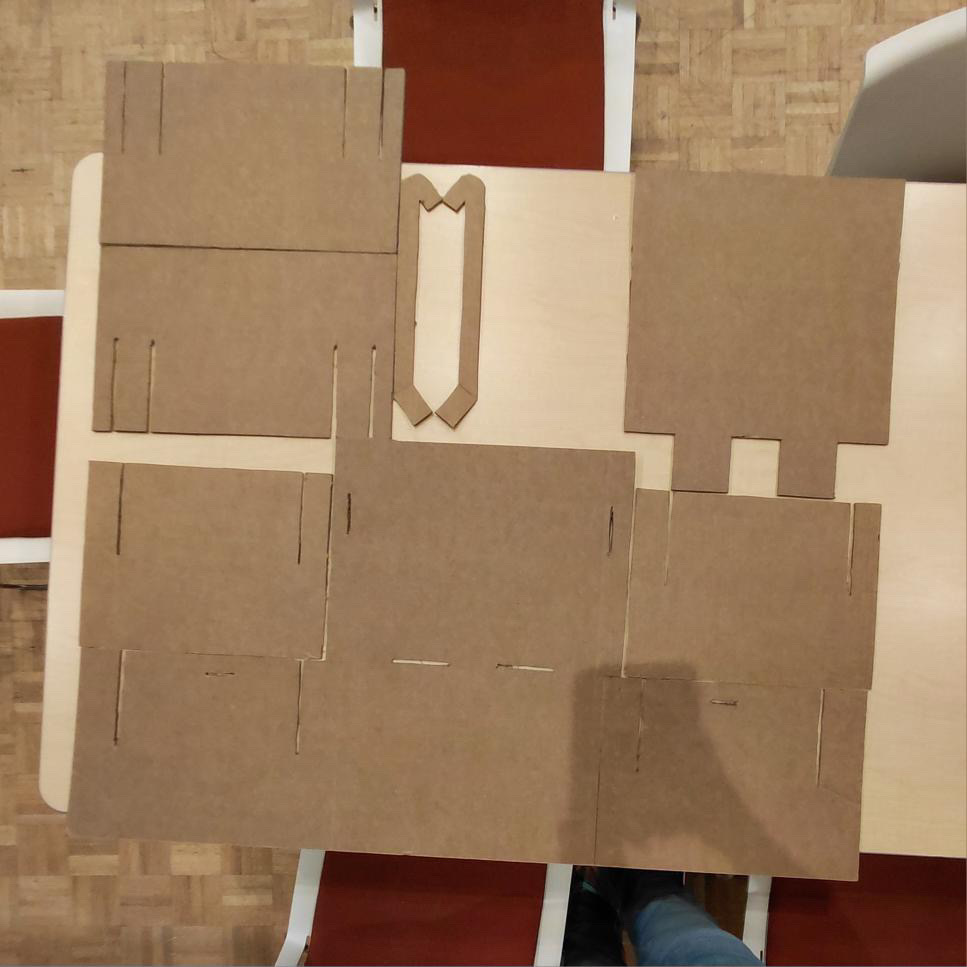
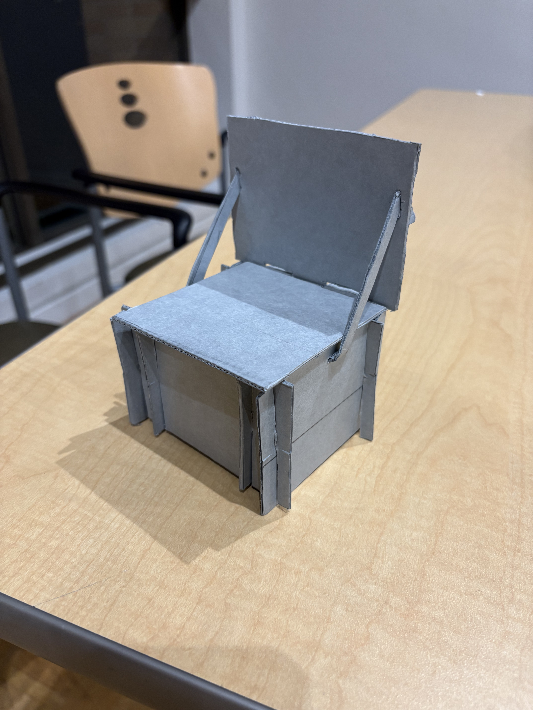
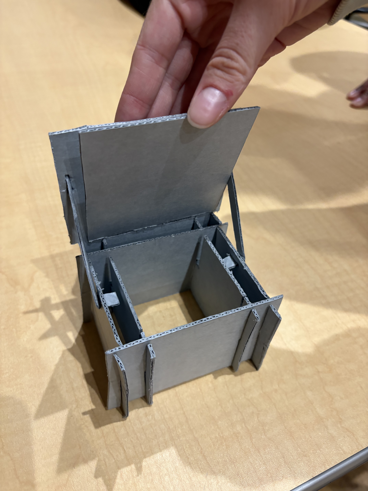

Cardboard Chair
My APSC 100 group and I designed and built a children’s chair intended for disaster relief. We had to balance load bearing capacity, material usage, storage, assembly time, and interactive elements to develop a safe, functional, and cost-effective chair. Due to the circumstances of this project, the chair had to be constructed from a flat sheet of cardboard so it could be easily mass produced. My team and I consulted with stakeholder views to develop the chair that would result in the highest overall satisfaction.
My primary role on my team was developing the cutting pattern for the cardboard that we cut the chair out of. This meant that I was conscious of our material usage and ensuring the largest storage space possible. To do this, I first created multiple prototypes along with my teammates. Then individually, I iterated our final cutting pattern to maximize storage and minimize cardboard usage. We successfully created a chair that contains a 9.25" × 9.25" × 9.00" storage area, only uses 1764 square inches of cardboard, holds 200 lbs, and that can be assembled in less than 25 seconds.
Throughout this project, I learned how to prioritize various design criteria. There are always trade-offs when you improve certain aspects of your design. I learned the importance of understanding how all components of a design work together, so you can effectively make improvements to all components while maximizing stakeholder satisfaction.


Cardboard Chair



Final Cutting Pattern & Scaled-Down Prototype
Cardboard Chair Poster